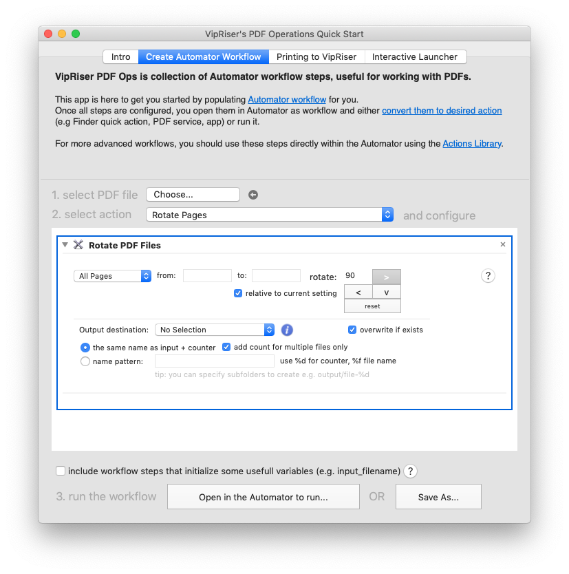
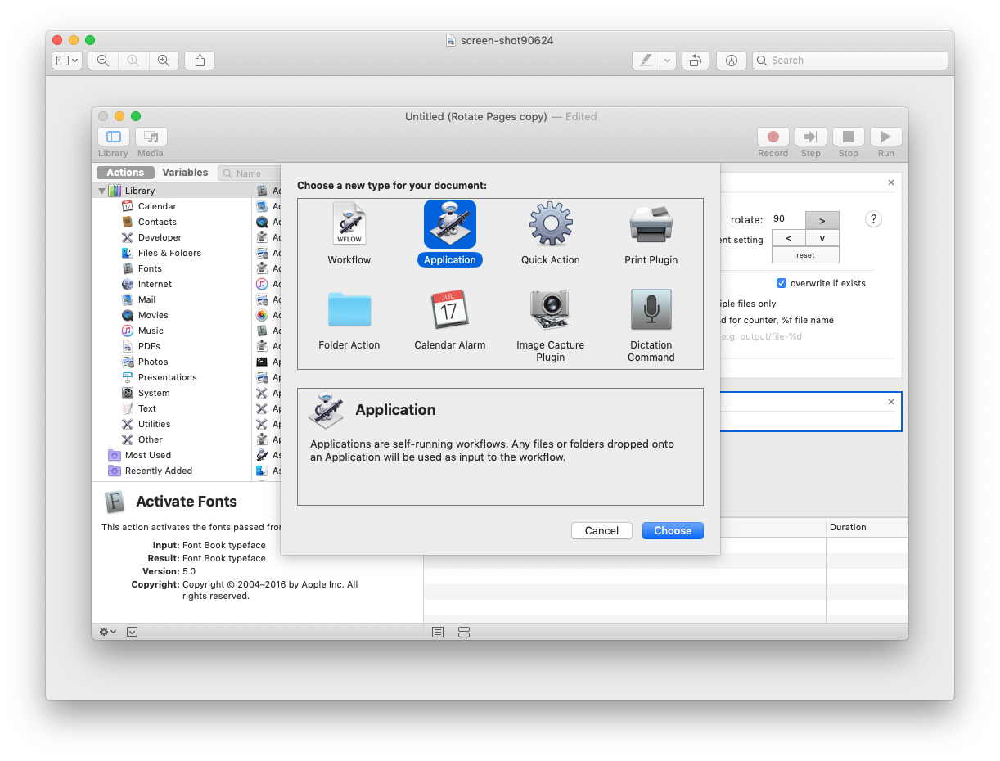

create new automator action
Create Action from Workflow
VipRiser PDF Ops is great way to get started creating a simple ad-hoc workflow. However, if you want to use it repeatedly, you should consider creating an “action” out of it, like Finder’s quick action, PDF print service or an app.
Choose and configure a step

Select on “Open in the Automator to run”
and the workflow will open in the Automator. To turn in into an action you choose “Convert To…” from the “File” menu.

Convert To… will enable you to choose an action type, configure and save it.
For more advanced workflows, you should use these steps directly within the Automator using the Actions Library.